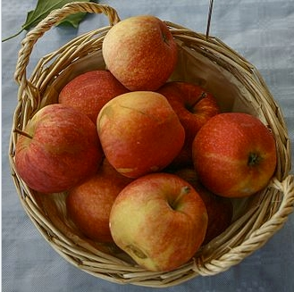
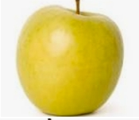
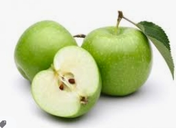

|  | GalaLa pomme Royal Gala possède une peau rouge voire orangée striée de rayures verticales. Sa chair est jaune et sucrée ; juteuse et croquante avec une pointe d'amertume. C'est la deuxième pomme la plus cultivée de France. La Gala est originaire de Nouvelle-Zélande. Sa variété a été mise au point dans le courant des années 1920. |
|  | GoldenAppelée aussi Golden Delicious, la pomme Golden est la variété la plus cultivée en France. Leur chair est juteuse, ferme et croquante, sucrée, parfumée et légèrement acide. Sa robe est jaune et tire quelquefois sur le rose. La culture de la pomme Golden Delicious est réputée facile. Ce pommier a cependant besoin d'une longue période de froid hivernal pour fructifier. Sa culture n'est donc pas adaptée aux climats les plus doux, mais plutôt à l'altitude. C'est une variété rustique. |
|  | Granny_smithLa Granny Smith est un cultivar de pomme très populaire apparu en Australie en 1868 à la suite d'un « semis chanceux » réalisé par une vieille dame, Maria Ann Smith. En France, c'est la troisième pomme la plus cultivée avec 10 % de la production nationale. La Granny Smith a été découverte en Australie en 1868 par une vieille dame du nom de Marie Ana Smith, d'où son nom, granny signifiant grand mère en anglais. C |